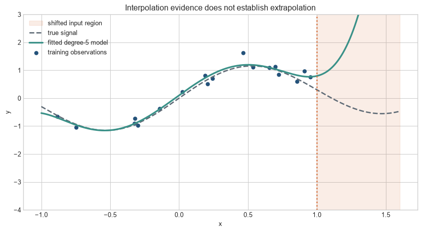

From fitting observed data to performing on new cases
The problem
Chapter 8 established that a network can reduce loss on the records used to update its parameters. That result does not answer the next practical question: whether the same procedure will work on records it has not seen. The held-out result inspected while training Chapter 8 is development evidence, because it influenced the judgement that training was successful; it is not an untouched final test.
Generalisation is performance on observations outside fitting and model selection, for a stated target population and operating condition. Overfitting is a training improvement that depends on details of the sample that do not recur. Training loss therefore establishes what the optimisation procedure achieved on observed data, not what it will achieve later, elsewhere, or under a changed measurement process.
A controlled example
The chapter uses a one-dimensional synthetic regression problem with known signal
\[
f(x)=\sin(\pi x)+0.3x,
\]
and observations \(y=f(x)+\varepsilon\), where \(\varepsilon\sim\mathcal{N}(0,0.25^2)\). Training inputs are sampled from \([-1,1]\). The known function lets us separate approximation error from the noise in observed labels. No substantive interpretation is attached to \(x\) or \(y\).
The first figure holds the observations fixed and changes only polynomial capacity. Read the dashed line as the signal that would recur under repeated sampling, and the coloured line as the fitted rule. The point is not that degree five is universally appropriate; it is that closer passage through observed points can move the fitted rule away from the recurring relation.
Figure 10.1: Polynomial capacity changes what the model follows: degree 1 misses the curve, degree 5 follows the signal, and degree 17 follows individual noisy observations.
All three models see the same observations. The degree-1 model cannot represent the curved signal. The degree-5 model follows the broad pattern while leaving some noise unexplained. The degree-17 model can pass close to every training point, but it oscillates between them. Its greater training fit has produced a worse estimate of the known signal.
Generalisation and overfitting. Generalisation is performance on observations not used to fit or select the procedure, within a stated target population. Overfitting occurs when an apparent training improvement relies on details that do not transfer. Neither label can be inferred from training loss alone.
Training, validation, and test sets. Training data estimate parameters. Validation data support choices among procedures or checkpoints and therefore belong to development. A test set is reserved for the final assessment after those choices are fixed. A held-out set is excluded from the particular fitting or selection stage under discussion; it is not automatically an untouched final test set.
Level 1 - Intuition
Learning the sample is not the same as learning the pattern
Training data contain regularities that can recur and details that arose from sampling or measurement noise. A model cannot label one component as signal and the other as noise before fitting. Its architecture, training procedure, and data determine which patterns it can capture.
Underfitting occurs when the model or training procedure fails to capture a transferable pattern that is present. Overfitting occurs when improvements on the training sample depend on details that do not transfer. Both are defined relative to a target: a model may generalise to new observations from the same source and fail after the population, measurement process, or deployment conditions change.
Held-out data create a partial test of transfer
An observation cannot provide an independent assessment after its label has influenced parameter estimates or model choices. Holding out data preserves observations for later evaluation. Performance on those observations estimates transfer from the training sample to the process that generated the held-out sample.
The estimate remains uncertain. A small test set can be unusually easy or hard. A random split can place near-duplicates on both sides. A test set drawn at the same time and place may say little about later deployment. Held-out performance is evidence whose scope is set by the sampling and splitting procedure.
Capacity describes options, not inevitable behaviour
A higher-capacity model can represent more functions. The degree-17 polynomial can represent the smoother degree-5 relationship as well as many oscillating alternatives. Capacity creates the possibility of fitting noise; it does not establish that a particular training algorithm will select the worst alternative. Data quantity, optimisation, architecture, and regularisation influence which fitted function is obtained.
The immediate task is therefore to preserve observations for different jobs and to compare errors without confusing model development with final assessment. Level 2 makes that workflow explicit, then uses capacity and sample-size curves to diagnose the gap.
Level 2 - Mechanics
Training, validation, and test data answer different questions
The training set estimates parameters. The validation set supports choices such as polynomial degree, hidden width, or stopping point. The test set is reserved for a final assessment after those choices are fixed. If the test result changes the model, the test set has become part of model development and a further untouched set is needed for an independent assessment.
Figure 10.2: Training, validation, and test sets enter the workflow at different points.
The diagram separates parameter fitting from model selection. Repeated validation is expected during development, although extensive reuse can itself overfit the validation set. Test data remain outside the loop. For time-dependent or grouped observations, random splitting may be inappropriate: later periods, sites, individuals, or clusters may need to remain intact.
Error curves reveal the training–evaluation gap
The next experiment fits polynomial degrees 0 through 17 and evaluates mean squared error on 4,000 fresh observations from the same process.
Figure 10.3: Training error falls as polynomial degree rises, while error on fresh observations reaches a minimum and then increases.
Training error provides no turning point because a higher-degree polynomial can match the training observations at least as closely. Fresh-sample error initially falls as the model captures curvature, then rises as the fitted oscillations become sensitive to the particular sample. The exact minimum changes if the observations or noise are regenerated.
Learning curves separate data scarcity from persistent underfitting
A learning curve plots error against training-sample size. If training error is low and held-out error is much higher, more representative data may narrow the gap. If both errors remain high and close together, additional observations alone may not repair a model that cannot represent the signal or has not been trained adequately.
Figure 10.4: Additional observations stabilise the flexible polynomial, while the low-capacity model retains systematic error.
The degree-1 model has persistent signal error because its straight line cannot reproduce the curve. The degree-15 model is unstable with very small samples, but its median error and dispersion fall as more observations constrain the fitted function. This example shows why capacity cannot be judged without sample size.
The curves describe realised errors from one set of samples. To say what they estimate, and why both the fitted model and its test score vary across samples, Level 3 defines empirical and population risk.
Level 3 - Mathematics & Code
Empirical risk estimates population risk
Let \(D=\{(x_i,y_i)\}_{i=1}^n\) be a training sample from distribution \(P\). For model \(f_\theta\) and loss \(\ell\), empirical risk is
Training minimises or approximately minimises \(\widehat R_D\). The quantity of interest is usually \(R_P\), which is unavailable because \(P\) is not observed in full. A test-set mean estimates \(R_P\) when test observations are independent draws from the relevant \(P\) and have not shaped the fitted model or evaluation procedure.
The generalisation gap for a fitted model is often written
It is random because both the fitted parameters and empirical risk depend on the sampled dataset. A negative observed test–training difference can occur by chance and does not prove that overfitting is impossible.
Bias and variance describe repeated sampling
For squared-error regression at input \(x\), suppose \(Y=f(x)+\varepsilon\), with \(\mathbb{E}[\varepsilon]=0\) and variance \(\sigma^2\). Across repeated training samples \(D\),
Bias and variance are properties of a learning procedure under a data-generating process, sample size, and evaluation point. They are not permanent labels attached to a model name.
Figure 10.5: At one input value, low degree produces bias while high degree produces sampling variance; observation noise remains for every model.
Degree 1 cannot represent the local curve and therefore has appreciable squared bias. Degree 15 can move sharply as the 24 observations change and therefore has high variance. Degree 5 balances these components in this specified experiment. Another input, sample size, or noise level would change the bars.
A test estimate has its own sampling error
For test losses \(L_1,\ldots,L_m\), the estimated mean test loss is \(\bar L=m^{-1}\sum_jL_j\). If losses are independent with finite variance, its standard error can be estimated as
The independence assumption fails for clustered observations or repeated measurements from the same entity. Confidence intervals must then respect the sampling structure. Comparing many models on the same test observations also creates paired losses; analysing their differences is usually more informative than treating model estimates as independent.
Code
# Estimate fresh-sample error and a simple independent-observation standard error.selected_model = Polynomial.fit(x_train, y_train, 5)test_losses = (selected_model(x_fresh) - y_fresh)**2mean_loss = test_losses.mean()standard_error = test_losses.std(ddof=1) / np.sqrt(len(test_losses))print(f"Estimated test MSE: {mean_loss:.3f}")print(f"Approximate standard error: {standard_error:.3f}")
Estimated test MSE: 0.074
Approximate standard error: 0.002
The standard error quantifies uncertainty from the finite test sample under the stated assumptions. It does not cover uncertainty from choosing degree 5 after inspecting these same test results, nor does it cover a change in the deployment distribution.
Cross-validation reuses data without making it independent
In \(K\)-fold cross-validation, the data are divided into \(K\) subsets. Each subset is evaluated once using a model fitted on the other \(K-1\) subsets. Averaging the fold losses uses observations efficiently for model comparison. The fold estimates are dependent because their training sets overlap. Cross-validation is therefore a model-selection procedure and uncertainty estimator with assumptions, not a way to manufacture new independent observations.
After selecting settings, the model is commonly refitted on the available development data and assessed on an untouched test set. If observations are temporal, spatial, clustered, or grouped by person, folds should preserve the corresponding dependence and intended transfer task.
Level 3 has treated generalisation as estimation under repeated sampling. Modern overparameterised systems add empirical patterns that are not captured by one simple U-shaped curve.
Level 4 - Research & Systems
Interpolation does not determine generalisation
An interpolating model achieves zero or near-zero training error. Zhang et al. (2017) showed that large neural networks could fit random labels, demonstrating that parameter count and training fit alone do not explain their generalisation on structured data. The result does not imply that real-label generalisation is accidental. It shows that explanations based only on an inability to fit arbitrary labels are inadequate.
Classical presentations often describe test error as U-shaped in model capacity. In some modern settings, error rises near the interpolation threshold and then falls again as capacity increases. Belkin et al. (2019) describe this double-descent pattern, and Nakkiran et al. (2020) report related behaviour as model size, training time, and sample size vary. These are empirical and theoretical patterns under specified conditions, not a rule that a larger model will eventually repair any overfitting problem.
The learning algorithm helps select among many fitting solutions
Overparameterised networks can contain many parameter settings with near-zero training loss. Architecture, initialisation, optimiser, batch order, augmentation, and stopping determine which solution is reached. Generalisation therefore depends on the interaction between data, model, and training procedure. Parameter count remains useful for memory and computation, but it is an incomplete measure of effective capacity.
This interaction is often described as implicit regularisation: the training procedure favours some fitting solutions without an explicit penalty term. The label does not identify a single mechanism, and evidence from one architecture or data distribution should not be transferred without testing.
Benchmark performance depends on the test distribution
A test set estimates performance for the process that produced it. Recht et al. (2019) constructed new CIFAR-10 and ImageNet test sets following the original collection processes and observed accuracy drops across many classifiers. Relative rankings were largely preserved, while changes in image difficulty appeared to explain much of the absolute decline. The study shows that even careful replication of a benchmark’s collection process can yield a meaningfully different evaluation distribution.
Code
x_extended=np.linspace(-1,1.6,650)fit_degree5=Polynomial.fit(x_train,y_train,5)fig,ax=plt.subplots(figsize=(9,5))ax.axvspan(1,1.6,color=orange,alpha=0.13,label="shifted input region")ax.plot(x_extended,true_function(x_extended),color=grey,linestyle="--",linewidth=2,label="true signal")ax.plot(x_extended,fit_degree5(x_extended),color=teal,linewidth=2.5,label="fitted degree-5 model")ax.scatter(x_train,y_train,color=blue,s=28,label="training observations")ax.axvline(1,color=orange,linestyle=":",linewidth=2)ax.set_xlabel("x"); ax.set_ylabel("y"); ax.set_ylim(-4,3)ax.set_title("Interpolation evidence does not establish extrapolation")ax.legend(); plt.tight_layout(); plt.show()

Figure 10.6: A model fitted within the training range can generalise there and fail when asked to extrapolate beyond it.
The model was evaluated successfully on fresh inputs from \([-1,1]\). Beyond that range, the fitted polynomial is unconstrained by observations and departs rapidly from the signal. Distribution shift can also occur without a visible range change: the relationship between features and labels, measurement quality, class balance, or decision environment may change.
Repeated evaluation can overfit the test procedure
Model developers may not train directly on test labels, yet repeated benchmark submissions reveal information about the test set through scores. Choices then adapt to that feedback. Public leaderboards, shared preprocessing, benchmark-specific prompts, and manual error analysis can all make the final system dependent on the evaluation procedure.
Data contamination is a stronger form of dependence: test observations or close variants appear in training data. For large web-trained models, exact provenance may be difficult to establish. Deduplication, time-based cut-offs, canary examples, source documentation, and newly collected evaluations reduce specific risks but do not prove independence from every benchmark.
A defensible generalisation claim states its target
An evaluation record should specify:
the target population, period, sites, and measurement process;
the unit of splitting and any grouping or temporal constraints;
which data informed parameters, hyperparameters, thresholds, and stopping;
test-set size, uncertainty, and subgroup coverage;
missing data, duplicates, contamination checks, and exclusions;
the number of models or prompts compared against the evaluation data;
performance under plausible shifts and known failure conditions;
the evidence required after deployment to detect deterioration.
The phrase held-out test set answers only one part of this record. Generalisation is a claim about transfer, and its scope should be no broader than the data and design that test it.
Common misconceptions
Low training loss proves that the model learned the underlying pattern. It proves fit to the training objective on observed data.
Overfitting means the optimiser ran for too many epochs. Epoch count is one possible mechanism; capacity, noise, selection, and data scarcity also matter.
A complex model must overfit. Capacity permits many fits, while data and the learning procedure influence the selected solution.
A simple model always generalises better. It may underfit a transferable pattern.
Test error is the true population error. It is a finite-sample estimate for a specified sampling process.
A random split guarantees independence. Duplicates, repeated individuals, clusters, or temporal dependence can cross the split.
Validation and test sets are interchangeable. Validation informs choices; the test set assesses the fixed procedure.
Cross-validation creates more data. It reuses observed data under several train–validation partitions.
Zero training error implies poor test performance. Interpolating models can generalise well or badly.
Double descent means increasing model size always improves performance. The pattern depends on the problem and training regime.
A fixed seed removes evaluation uncertainty. It fixes one computational path, not variation across samples or environments.
In-distribution performance establishes robustness to shift. Shift changes the distribution the estimate refers to.
A larger test set repairs test-set reuse. Repeated adaptation compromises independence even when the set is large.
Exercises
Explain the difference between training fit and generalisation using the degree-17 model.
Identify the evidence of underfitting in the degree-1 panel.
State the roles of training, validation, and test data.
Give an example where a random row split would leak information.
Calculate empirical mean squared error for four stated predictions and labels.
Write population risk for binary cross-entropy.
Explain why the generalisation gap is random across training samples.
Reproduce the degree-versus-error experiment with a different seed.
Increase the noise standard deviation and describe how the curves change.
Increase the training sample to 100 and compare the degree-15 fit.
Estimate a confidence interval for the degree-5 test MSE under independent losses.
Explain why that interval does not include model-selection uncertainty.
Implement five-fold cross-validation for polynomial degree selection.
Redesign the folds for repeated observations from the same person.
Calculate bias squared and variance from a supplied set of repeated predictions.
Explain how a model can interpolate training data and still generalise.
Distinguish capacity double descent from epoch-wise double descent.
Design an evaluation for a model deployed one year after training.
List two mechanisms of benchmark contamination and one diagnostic for each.
Write a bounded generalisation claim for the synthetic example.
Summary
Generalisation concerns performance beyond observations used to fit and select a model. Overfitting occurs when training improvements depend on sample-specific details that do not transfer; underfitting occurs when a learning procedure fails to capture transferable structure. Training, validation, and test sets have different roles because parameter estimation, model selection, and final assessment create different forms of dependence.
Empirical risk estimates population risk under a sampling design. Test performance has sampling error, and the fitted model varies when the training sample changes. Bias and variance describe that repeated-sampling behaviour for a specified procedure and data-generating process. Learning curves and capacity curves help diagnose error, but their interpretation depends on sample size and the target distribution.
Modern networks can interpolate training data and still generalise. Double descent and implicit regularisation qualify a simple capacity narrative without removing the need for independent evaluation. Test-set reuse, contamination, and distribution shift can invalidate a performance claim even when the training loop is technically correct.
Looking ahead
Chapter 10 examines explicit responses to overfitting, including weight penalties, dropout, data augmentation, and early stopping. Those methods alter the fitted solution or effective training data; their value must still be assessed on validation and test designs that match the intended transfer task.
Further reading
Classical statistical-learning treatments of model complexity and generalisation appear in Hastie, Tibshirani, and Friedman (2009). The ability of large networks to fit random labels is demonstrated by Zhang et al. (2017). Double-descent formulations are developed by Belkin et al. (2019) and Nakkiran et al. (2020). The sensitivity of benchmark performance to newly collected test sets is examined by Recht et al. (2019).
Belkin, Mikhail, Daniel Hsu, Siyuan Ma, and Soumik Mandal. 2019. “Reconciling Modern Machine-Learning Practice and the Classical Bias–Variance Trade-Off.”Proceedings of the National Academy of Sciences 116 (32): 15849–54. https://doi.org/10.1073/pnas.1903070116.
Nakkiran, Preetum, Gal Kaplun, Yamini Bansal, Tristan Yang, Boaz Barak, and Ilya Sutskever. 2020. “Deep Double Descent: Where Bigger Models and More Data Hurt.” In International Conference on Learning Representations. https://openreview.net/forum?id=-bJ_Hb7lCVH.
Recht, Benjamin, Rebecca Roelofs, Ludwig Schmidt, and Vaishaal Shankar. 2019. “Do ImageNet Classifiers Generalize to ImageNet?” In Proceedings of the 36th International Conference on Machine Learning, 97:5389–5400. Proceedings of Machine Learning Research. PMLR. https://proceedings.mlr.press/v97/recht19a.html.
Zhang, Chiyuan, Samy Bengio, Moritz Hardt, Benjamin Recht, and Oriol Vinyals. 2017. “Understanding Deep Learning Requires Rethinking Generalization.” In International Conference on Learning Representations. https://openreview.net/forum?id=Sy8gdB9xx.
Source Code
---title: "Generalisation and Overfitting"subtitle: "From fitting observed data to performing on new cases"---## The problemChapter 8 established that a network can reduce loss on the records used to update its parameters. That result does not answer the next practical question: whether the same procedure will work on records it has not seen. The held-out result inspected while training Chapter 8 is development evidence, because it influenced the judgement that training was successful; it is not an untouched final test.Generalisation is performance on observations outside fitting and model selection, for a stated target population and operating condition. Overfitting is a training improvement that depends on details of the sample that do not recur. Training loss therefore establishes what the optimisation procedure achieved on observed data, not what it will achieve later, elsewhere, or under a changed measurement process.### A controlled exampleThe chapter uses a one-dimensional synthetic regression problem with known signal$$f(x)=\sin(\pi x)+0.3x,$$and observations $y=f(x)+\varepsilon$, where $\varepsilon\sim\mathcal{N}(0,0.25^2)$. Training inputs are sampled from $[-1,1]$. The known function lets us separate approximation error from the noise in observed labels. No substantive interpretation is attached to $x$ or $y$.The first figure holds the observations fixed and changes only polynomial capacity. Read the dashed line as the signal that would recur under repeated sampling, and the coloured line as the fitted rule. The point is not that degree five is universally appropriate; it is that closer passage through observed points can move the fitted rule away from the recurring relation.```{python}#| label: fig-capacity-fits#| fig-cap: "Polynomial capacity changes what the model follows: degree 1 misses the curve, degree 5 follows the signal, and degree 17 follows individual noisy observations."#| fig-alt: "Three panels show the same 18 noisy training observations with polynomial fits of degree 1, 5, and 17 against the true smooth function."import numpy as npimport matplotlib.pyplot as pltfrom numpy.polynomial import Polynomialfrom matplotlib.patches import FancyBboxPatch, FancyArrowPatchplt.style.use("seaborn-v0_8-whitegrid")blue, teal, orange, purple, grey ="#24527a", "#3a9188", "#d97745", "#7a5195", "#5f6b76"rng = np.random.default_rng(41)def true_function(x):return np.sin(np.pi * x) +0.3* xn_train =18x_train = np.sort(rng.uniform(-1, 1, n_train))y_train = true_function(x_train) + rng.normal(0, 0.25, n_train)x_grid = np.linspace(-1, 1, 500)fig, axes = plt.subplots(1, 3, figsize=(13.5, 4.2), sharex=True, sharey=True)for ax, degree, colour, title inzip( axes, [1, 5, 17], [blue, teal, orange], ["Degree 1: underfitting", "Degree 5: useful fit", "Degree 17: overfitting"]): fitted = Polynomial.fit(x_train, y_train, degree) ax.plot(x_grid, true_function(x_grid), color=grey, linestyle="--", linewidth=2, label="true signal") ax.plot(x_grid, fitted(x_grid), color=colour, linewidth=2.5, label="fitted model") ax.scatter(x_train, y_train, color="black", s=28, zorder=3, label="training data") ax.set_title(title); ax.set_xlabel("x"); ax.set_ylim(-2.2, 2.2)axes[0].set_ylabel("y")axes[0].legend(fontsize=8)plt.tight_layout(); plt.show()```All three models see the same observations. The degree-1 model cannot represent the curved signal. The degree-5 model follows the broad pattern while leaving some noise unexplained. The degree-17 model can pass close to every training point, but it oscillates between them. Its greater training fit has produced a worse estimate of the known signal.::: {.concept-box .concept-core #concept-generalisation data-term="Generalisation and overfitting" data-domain="Training and evaluation"}**Generalisation and overfitting.** Generalisation is performance on observations not used to fit or select the procedure, within a stated target population. Overfitting occurs when an apparent training improvement relies on details that do not transfer. Neither label can be inferred from training loss alone.:::::: {.concept-box .concept-distinction #concept-training-validation-test data-term="Training, validation, and test sets" data-domain="Training and evaluation"}**Training, validation, and test sets.** Training data estimate parameters. Validation data support choices among procedures or checkpoints and therefore belong to development. A test set is reserved for the final assessment after those choices are fixed. A **held-out** set is excluded from the particular fitting or selection stage under discussion; it is not automatically an untouched final test set.:::## Level 1 - Intuition### Learning the sample is not the same as learning the patternTraining data contain regularities that can recur and details that arose from sampling or measurement noise. A model cannot label one component as signal and the other as noise before fitting. Its architecture, training procedure, and data determine which patterns it can capture.Underfitting occurs when the model or training procedure fails to capture a transferable pattern that is present. Overfitting occurs when improvements on the training sample depend on details that do not transfer. Both are defined relative to a target: a model may generalise to new observations from the same source and fail after the population, measurement process, or deployment conditions change.### Held-out data create a partial test of transferAn observation cannot provide an independent assessment after its label has influenced parameter estimates or model choices. Holding out data preserves observations for later evaluation. Performance on those observations estimates transfer from the training sample to the process that generated the held-out sample.The estimate remains uncertain. A small test set can be unusually easy or hard. A random split can place near-duplicates on both sides. A test set drawn at the same time and place may say little about later deployment. Held-out performance is evidence whose scope is set by the sampling and splitting procedure.### Capacity describes options, not inevitable behaviourA higher-capacity model can represent more functions. The degree-17 polynomial can represent the smoother degree-5 relationship as well as many oscillating alternatives. Capacity creates the possibility of fitting noise; it does not establish that a particular training algorithm will select the worst alternative. Data quantity, optimisation, architecture, and regularisation influence which fitted function is obtained.The immediate task is therefore to preserve observations for different jobs and to compare errors without confusing model development with final assessment. Level 2 makes that workflow explicit, then uses capacity and sample-size curves to diagnose the gap.## Level 2 - Mechanics### Training, validation, and test data answer different questionsThe training set estimates parameters. The validation set supports choices such as polynomial degree, hidden width, or stopping point. The test set is reserved for a final assessment after those choices are fixed. If the test result changes the model, the test set has become part of model development and a further untouched set is needed for an independent assessment.```{python}#| label: fig-data-split-roles#| fig-cap: "Training, validation, and test sets enter the workflow at different points."#| fig-alt: "A flow diagram shows training data fitting parameters, validation data selecting among fitted candidates, and test data assessing the selected model once."fig, ax = plt.subplots(figsize=(10.5, 4.8))boxes = [ (0.08, 0.60, "Training data", "fit parameters", blue), (0.38, 0.60, "Candidate models", "degrees, widths, epochs", teal), (0.68, 0.60, "Validation data", "select a candidate", orange), (0.68, 0.18, "Selected model", "choices fixed", purple), (0.38, 0.18, "Test data", "final assessment", blue),]for x, y, heading, detail, colour in boxes: box = FancyBboxPatch((x-0.11,y-0.09),0.22,0.18,boxstyle="round,pad=0.02", facecolor=colour,edgecolor="black") ax.add_patch(box) ax.text(x,y+0.025,heading,ha="center",va="center",color="white",weight="bold") ax.text(x,y-0.035,detail,ha="center",va="center",color="white",fontsize=9)arrows=[((0.20,0.60),(0.26,0.60)),((0.50,0.60),(0.56,0.60)), ((0.68,0.49),(0.68,0.30)),((0.56,0.18),(0.50,0.18))]for start,end in arrows: ax.add_patch(FancyArrowPatch(start,end,arrowstyle="->",mutation_scale=15,color=grey))ax.text(0.53,0.40,"development loop stays above",ha="center",color=grey)ax.set_xlim(0,0.82); ax.set_ylim(0.04,0.76); ax.axis("off")plt.tight_layout(); plt.show()```The diagram separates parameter fitting from model selection. Repeated validation is expected during development, although extensive reuse can itself overfit the validation set. Test data remain outside the loop. For time-dependent or grouped observations, random splitting may be inappropriate: later periods, sites, individuals, or clusters may need to remain intact.### Error curves reveal the training–evaluation gapThe next experiment fits polynomial degrees 0 through 17 and evaluates mean squared error on 4,000 fresh observations from the same process.```{python}#| label: fig-capacity-error#| fig-cap: "Training error falls as polynomial degree rises, while error on fresh observations reaches a minimum and then increases."#| fig-alt: "A log-scale line chart shows monotonically decreasing training mean squared error and U-shaped fresh-sample error over polynomial degrees zero to seventeen."x_fresh = rng.uniform(-1, 1, 4000)y_fresh = true_function(x_fresh) + rng.normal(0, 0.25, len(x_fresh))degrees = np.arange(0, 18)training_mse, fresh_mse = [], []for degree in degrees: fitted = Polynomial.fit(x_train, y_train, int(degree)) training_mse.append(np.mean((fitted(x_train)-y_train)**2)) fresh_mse.append(np.mean((fitted(x_fresh)-y_fresh)**2))fig, ax = plt.subplots(figsize=(9, 5))ax.plot(degrees, training_mse, marker="o", color=blue, linewidth=2.4, label="training MSE")ax.plot(degrees, fresh_mse, marker="s", color=orange, linewidth=2.4, label="fresh-sample MSE")ax.set_yscale("log"); ax.set_xlabel("Polynomial degree"); ax.set_ylabel("Mean squared error")ax.set_title("Capacity and error on observed versus fresh data")ax.axvline(degrees[np.argmin(fresh_mse)], color=grey, linestyle="--", label="best fresh-sample degree")ax.set_ylim(1e-4, 1e6)ax.legend(); plt.tight_layout(); plt.show()```Training error provides no turning point because a higher-degree polynomial can match the training observations at least as closely. Fresh-sample error initially falls as the model captures curvature, then rises as the fitted oscillations become sensitive to the particular sample. The exact minimum changes if the observations or noise are regenerated.### Learning curves separate data scarcity from persistent underfittingA learning curve plots error against training-sample size. If training error is low and held-out error is much higher, more representative data may narrow the gap. If both errors remain high and close together, additional observations alone may not repair a model that cannot represent the signal or has not been trained adequately.```{python}#| label: fig-learning-curves#| fig-cap: "Additional observations stabilise the flexible polynomial, while the low-capacity model retains systematic error."#| fig-alt: "Two panels show median training and fresh-sample error against sample size for degree-1 and degree-15 polynomial models, with uncertainty bands across repeated samples."sample_sizes = np.array([12, 18, 30, 50, 80, 140])repetitions =80evaluation_x = np.linspace(-1, 1, 800)evaluation_y = true_function(evaluation_x)results = {}for degree in [1, 15]: train_runs, eval_runs = [], []for n in sample_sizes: tr_values, ev_values = [], []for _ inrange(repetitions): xs = rng.uniform(-1, 1, n) ys = true_function(xs) + rng.normal(0, 0.25, n) fit = Polynomial.fit(xs, ys, degree) tr_values.append(np.mean((fit(xs)-ys)**2)) ev_values.append(np.mean((fit(evaluation_x)-evaluation_y)**2)) train_runs.append(tr_values); eval_runs.append(ev_values) results[degree] = (np.array(train_runs), np.array(eval_runs))fig, axes = plt.subplots(1, 2, figsize=(11, 4.5), sharex=True)for ax, degree inzip(axes, [1, 15]): train_runs, eval_runs = results[degree]for values, colour, label in [(train_runs,blue,"training error"),(eval_runs,orange,"signal error")]: median=np.median(values,axis=1); low=np.quantile(values,0.1,axis=1); high=np.quantile(values,0.9,axis=1) ax.plot(sample_sizes,median,marker="o",color=colour,linewidth=2.3,label=label) ax.fill_between(sample_sizes,low,high,color=colour,alpha=0.16) ax.set_yscale("log"); ax.set_title(f"Degree {degree}"); ax.set_xlabel("Training observations")axes[0].set_ylabel("Mean squared error"); axes[0].legend()axes[0].set_ylim(3e-2, 1)axes[1].set_ylim(1e-3, 1e9)plt.tight_layout(); plt.show()```The degree-1 model has persistent signal error because its straight line cannot reproduce the curve. The degree-15 model is unstable with very small samples, but its median error and dispersion fall as more observations constrain the fitted function. This example shows why capacity cannot be judged without sample size.The curves describe realised errors from one set of samples. To say what they estimate, and why both the fitted model and its test score vary across samples, Level 3 defines empirical and population risk.## Level 3 - Mathematics & Code### Empirical risk estimates population riskLet $D=\{(x_i,y_i)\}_{i=1}^n$ be a training sample from distribution $P$. For model $f_\theta$ and loss $\ell$, empirical risk is$$\widehat R_D(\theta)=\frac{1}{n}\sum_{i=1}^n\ell(f_\theta(x_i),y_i).$$Population risk is$$R_P(\theta)=\mathbb{E}_{(X,Y)\sim P}[\ell(f_\theta(X),Y)].$$Training minimises or approximately minimises $\widehat R_D$. The quantity of interest is usually $R_P$, which is unavailable because $P$ is not observed in full. A test-set mean estimates $R_P$ when test observations are independent draws from the relevant $P$ and have not shaped the fitted model or evaluation procedure.The generalisation gap for a fitted model is often written$$R_P(\hat\theta_D)-\widehat R_D(\hat\theta_D).$$It is random because both the fitted parameters and empirical risk depend on the sampled dataset. A negative observed test–training difference can occur by chance and does not prove that overfitting is impossible.### Bias and variance describe repeated samplingFor squared-error regression at input $x$, suppose $Y=f(x)+\varepsilon$, with $\mathbb{E}[\varepsilon]=0$ and variance $\sigma^2$. Across repeated training samples $D$,$$\mathbb{E}_D[(\hat f_D(x)-Y)^2]=\underbrace{(\mathbb{E}_D[\hat f_D(x)]-f(x))^2}_{\text{bias}^2}+\underbrace{\mathbb{V}_D[\hat f_D(x)]}_{\text{variance}}+\underbrace{\sigma^2}_{\text{irreducible noise}}.$$Bias and variance are properties of a learning procedure under a data-generating process, sample size, and evaluation point. They are not permanent labels attached to a model name.```{python}#| label: fig-bias-variance#| fig-cap: "At one input value, low degree produces bias while high degree produces sampling variance; observation noise remains for every model."#| fig-alt: "A stacked bar chart decomposes estimated prediction error into squared bias, variance, and noise for polynomial degrees 1, 5, and 15."x0 =0.65noise_variance =0.25**2components = []for degree in [1, 5, 15]: predictions = []for _ inrange(400): xs = rng.uniform(-1, 1, 24) ys = true_function(xs) + rng.normal(0, 0.25, len(xs)) predictions.append(Polynomial.fit(xs, ys, degree)(x0)) predictions = np.array(predictions) bias_squared = (predictions.mean()-true_function(x0))**2 variance = predictions.var() components.append((bias_squared, variance, noise_variance))components = np.array(components)fig, ax = plt.subplots(figsize=(8.5, 5))positions=np.arange(3); bottom=np.zeros(3)for values, colour, label inzip(components.T,[blue,orange,grey],[r"bias$^2$","variance","noise"]): ax.bar(positions,values,bottom=bottom,color=colour,label=label) bottom += valuesax.set_yscale("log"); ax.set_xticks(positions,["Degree 1","Degree 5","Degree 15"])ax.set_ylabel("Estimated error component at x = 0.65")ax.set_title("Bias–variance decomposition across repeated samples")ax.legend(); plt.tight_layout(); plt.show()```Degree 1 cannot represent the local curve and therefore has appreciable squared bias. Degree 15 can move sharply as the 24 observations change and therefore has high variance. Degree 5 balances these components in this specified experiment. Another input, sample size, or noise level would change the bars.### A test estimate has its own sampling errorFor test losses $L_1,\ldots,L_m$, the estimated mean test loss is $\bar L=m^{-1}\sum_jL_j$. If losses are independent with finite variance, its standard error can be estimated as$$\operatorname{SE}(\bar L)=\frac{s_L}{\sqrt m}.$$The independence assumption fails for clustered observations or repeated measurements from the same entity. Confidence intervals must then respect the sampling structure. Comparing many models on the same test observations also creates paired losses; analysing their differences is usually more informative than treating model estimates as independent.```{python}# Estimate fresh-sample error and a simple independent-observation standard error.selected_model = Polynomial.fit(x_train, y_train, 5)test_losses = (selected_model(x_fresh) - y_fresh)**2mean_loss = test_losses.mean()standard_error = test_losses.std(ddof=1) / np.sqrt(len(test_losses))print(f"Estimated test MSE: {mean_loss:.3f}")print(f"Approximate standard error: {standard_error:.3f}")```The standard error quantifies uncertainty from the finite test sample under the stated assumptions. It does not cover uncertainty from choosing degree 5 after inspecting these same test results, nor does it cover a change in the deployment distribution.### Cross-validation reuses data without making it independentIn $K$-fold cross-validation, the data are divided into $K$ subsets. Each subset is evaluated once using a model fitted on the other $K-1$ subsets. Averaging the fold losses uses observations efficiently for model comparison. The fold estimates are dependent because their training sets overlap. Cross-validation is therefore a model-selection procedure and uncertainty estimator with assumptions, not a way to manufacture new independent observations.After selecting settings, the model is commonly refitted on the available development data and assessed on an untouched test set. If observations are temporal, spatial, clustered, or grouped by person, folds should preserve the corresponding dependence and intended transfer task.Level 3 has treated generalisation as estimation under repeated sampling. Modern overparameterised systems add empirical patterns that are not captured by one simple U-shaped curve.## Level 4 - Research & Systems### Interpolation does not determine generalisationAn interpolating model achieves zero or near-zero training error. @zhang2017 showed that large neural networks could fit random labels, demonstrating that parameter count and training fit alone do not explain their generalisation on structured data. The result does not imply that real-label generalisation is accidental. It shows that explanations based only on an inability to fit arbitrary labels are inadequate.Classical presentations often describe test error as U-shaped in model capacity. In some modern settings, error rises near the interpolation threshold and then falls again as capacity increases. @belkin2019 describe this *double-descent* pattern, and @nakkiran2020 report related behaviour as model size, training time, and sample size vary. These are empirical and theoretical patterns under specified conditions, not a rule that a larger model will eventually repair any overfitting problem.### The learning algorithm helps select among many fitting solutionsOverparameterised networks can contain many parameter settings with near-zero training loss. Architecture, initialisation, optimiser, batch order, augmentation, and stopping determine which solution is reached. Generalisation therefore depends on the interaction between data, model, and training procedure. Parameter count remains useful for memory and computation, but it is an incomplete measure of effective capacity.This interaction is often described as implicit regularisation: the training procedure favours some fitting solutions without an explicit penalty term. The label does not identify a single mechanism, and evidence from one architecture or data distribution should not be transferred without testing.### Benchmark performance depends on the test distributionA test set estimates performance for the process that produced it. @recht2019 constructed new CIFAR-10 and ImageNet test sets following the original collection processes and observed accuracy drops across many classifiers. Relative rankings were largely preserved, while changes in image difficulty appeared to explain much of the absolute decline. The study shows that even careful replication of a benchmark's collection process can yield a meaningfully different evaluation distribution.```{python}#| label: fig-distribution-shift#| fig-cap: "A model fitted within the training range can generalise there and fail when asked to extrapolate beyond it."#| fig-alt: "A plot shows training observations and a degree-5 fit on minus one to one, then extends the same fitted curve into a shaded shifted region from one to one point six where it diverges from the true function."x_extended=np.linspace(-1,1.6,650)fit_degree5=Polynomial.fit(x_train,y_train,5)fig,ax=plt.subplots(figsize=(9,5))ax.axvspan(1,1.6,color=orange,alpha=0.13,label="shifted input region")ax.plot(x_extended,true_function(x_extended),color=grey,linestyle="--",linewidth=2,label="true signal")ax.plot(x_extended,fit_degree5(x_extended),color=teal,linewidth=2.5,label="fitted degree-5 model")ax.scatter(x_train,y_train,color=blue,s=28,label="training observations")ax.axvline(1,color=orange,linestyle=":",linewidth=2)ax.set_xlabel("x"); ax.set_ylabel("y"); ax.set_ylim(-4,3)ax.set_title("Interpolation evidence does not establish extrapolation")ax.legend(); plt.tight_layout(); plt.show()```The model was evaluated successfully on fresh inputs from $[-1,1]$. Beyond that range, the fitted polynomial is unconstrained by observations and departs rapidly from the signal. Distribution shift can also occur without a visible range change: the relationship between features and labels, measurement quality, class balance, or decision environment may change.### Repeated evaluation can overfit the test procedureModel developers may not train directly on test labels, yet repeated benchmark submissions reveal information about the test set through scores. Choices then adapt to that feedback. Public leaderboards, shared preprocessing, benchmark-specific prompts, and manual error analysis can all make the final system dependent on the evaluation procedure.Data contamination is a stronger form of dependence: test observations or close variants appear in training data. For large web-trained models, exact provenance may be difficult to establish. Deduplication, time-based cut-offs, canary examples, source documentation, and newly collected evaluations reduce specific risks but do not prove independence from every benchmark.### A defensible generalisation claim states its targetAn evaluation record should specify:- the target population, period, sites, and measurement process;- the unit of splitting and any grouping or temporal constraints;- which data informed parameters, hyperparameters, thresholds, and stopping;- test-set size, uncertainty, and subgroup coverage;- missing data, duplicates, contamination checks, and exclusions;- the number of models or prompts compared against the evaluation data;- performance under plausible shifts and known failure conditions;- the evidence required after deployment to detect deterioration.The phrase *held-out test set* answers only one part of this record. Generalisation is a claim about transfer, and its scope should be no broader than the data and design that test it.## Common misconceptions- **Low training loss proves that the model learned the underlying pattern.** It proves fit to the training objective on observed data.- **Overfitting means the optimiser ran for too many epochs.** Epoch count is one possible mechanism; capacity, noise, selection, and data scarcity also matter.- **A complex model must overfit.** Capacity permits many fits, while data and the learning procedure influence the selected solution.- **A simple model always generalises better.** It may underfit a transferable pattern.- **Test error is the true population error.** It is a finite-sample estimate for a specified sampling process.- **A random split guarantees independence.** Duplicates, repeated individuals, clusters, or temporal dependence can cross the split.- **Validation and test sets are interchangeable.** Validation informs choices; the test set assesses the fixed procedure.- **Cross-validation creates more data.** It reuses observed data under several train–validation partitions.- **Zero training error implies poor test performance.** Interpolating models can generalise well or badly.- **Double descent means increasing model size always improves performance.** The pattern depends on the problem and training regime.- **A fixed seed removes evaluation uncertainty.** It fixes one computational path, not variation across samples or environments.- **In-distribution performance establishes robustness to shift.** Shift changes the distribution the estimate refers to.- **A larger test set repairs test-set reuse.** Repeated adaptation compromises independence even when the set is large.## Exercises1. Explain the difference between training fit and generalisation using the degree-17 model.2. Identify the evidence of underfitting in the degree-1 panel.3. State the roles of training, validation, and test data.4. Give an example where a random row split would leak information.5. Calculate empirical mean squared error for four stated predictions and labels.6. Write population risk for binary cross-entropy.7. Explain why the generalisation gap is random across training samples.8. Reproduce the degree-versus-error experiment with a different seed.9. Increase the noise standard deviation and describe how the curves change.10. Increase the training sample to 100 and compare the degree-15 fit.11. Estimate a confidence interval for the degree-5 test MSE under independent losses.12. Explain why that interval does not include model-selection uncertainty.13. Implement five-fold cross-validation for polynomial degree selection.14. Redesign the folds for repeated observations from the same person.15. Calculate bias squared and variance from a supplied set of repeated predictions.16. Explain how a model can interpolate training data and still generalise.17. Distinguish capacity double descent from epoch-wise double descent.18. Design an evaluation for a model deployed one year after training.19. List two mechanisms of benchmark contamination and one diagnostic for each.20. Write a bounded generalisation claim for the synthetic example.## SummaryGeneralisation concerns performance beyond observations used to fit and select a model. Overfitting occurs when training improvements depend on sample-specific details that do not transfer; underfitting occurs when a learning procedure fails to capture transferable structure. Training, validation, and test sets have different roles because parameter estimation, model selection, and final assessment create different forms of dependence.Empirical risk estimates population risk under a sampling design. Test performance has sampling error, and the fitted model varies when the training sample changes. Bias and variance describe that repeated-sampling behaviour for a specified procedure and data-generating process. Learning curves and capacity curves help diagnose error, but their interpretation depends on sample size and the target distribution.Modern networks can interpolate training data and still generalise. Double descent and implicit regularisation qualify a simple capacity narrative without removing the need for independent evaluation. Test-set reuse, contamination, and distribution shift can invalidate a performance claim even when the training loop is technically correct.## Looking aheadChapter 10 examines explicit responses to overfitting, including weight penalties, dropout, data augmentation, and early stopping. Those methods alter the fitted solution or effective training data; their value must still be assessed on validation and test designs that match the intended transfer task.## Further readingClassical statistical-learning treatments of model complexity and generalisation appear in @hastie2009. The ability of large networks to fit random labels is demonstrated by @zhang2017. Double-descent formulations are developed by @belkin2019 and @nakkiran2020. The sensitivity of benchmark performance to newly collected test sets is examined by @recht2019.